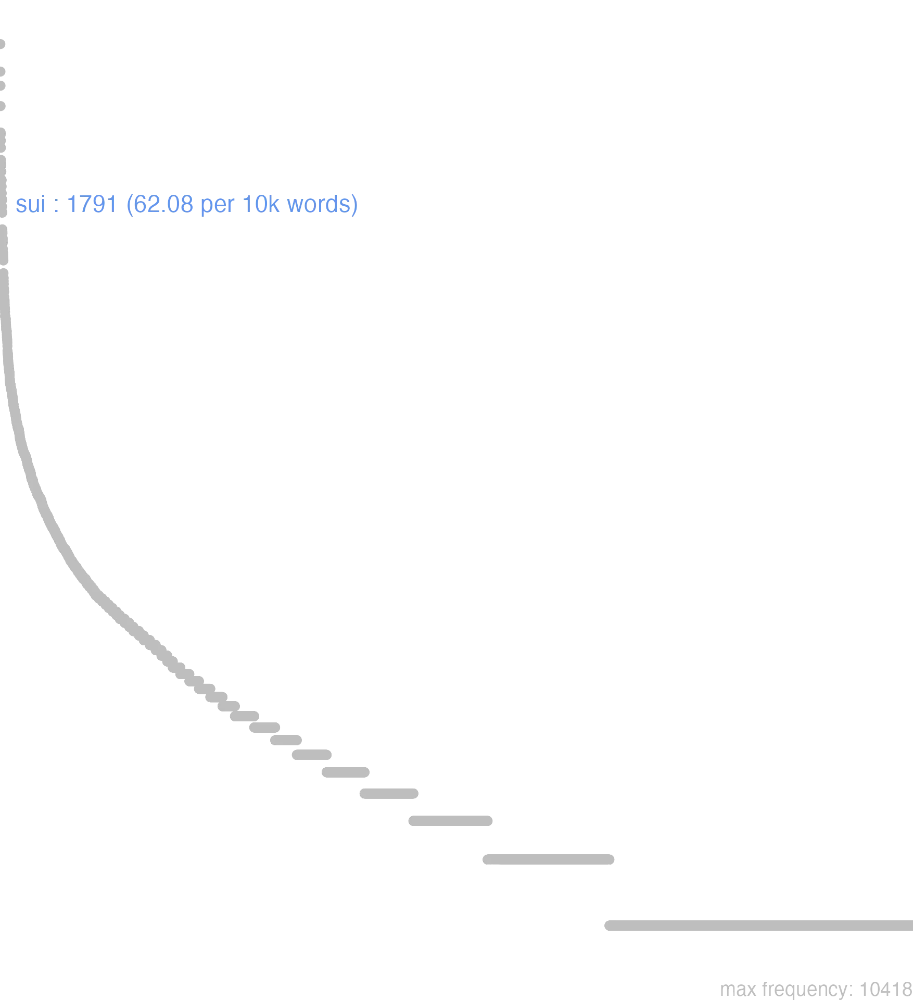

165 sui
165.0.0.1 bases lexicais
id: http://lila-erc.eu/data/id/lemma/131255
classe: pronome
paradigma: pronominal
outras grafias:
variantes do lema:
no data
sŭī
no data
165.0.0.2 dicionários tradicionais
sēsē
acus. e abl. de sui forma reduplicada = sē.
1 sē
acus. e abl. de sui.
2 sŭī sibī sibĭ, sē
pron. reflex. da 3ª pess. do sing. e do pl.
Obs.: Formas com enclíticas: sepse Cíc. Rep. 3, 12; semet T. Lív. 2, 12, 7. Forma reduplicada: sese Cés. B. Gal. 2, 6, 4.
acus. e abl. de sui forma reduplicada = sē.
1 sē
acus. e abl. de sui.
2 sŭī sibī sibĭ, sē
pron. reflex. da 3ª pess. do sing. e do pl.
Obs.: Formas com enclíticas: sepse Cíc. Rep. 3, 12; semet T. Lív. 2, 12, 7. Forma reduplicada: sese Cés. B. Gal. 2, 6, 4.
1 De si, dele, dela, deles, delas; para si, a si, lhe, lhes; se, a si, a ele, a ela, a eles, a elas Cíc. lae. 98.
no data
Sui sibi se
pronome da terceira pessoa no sing., e no plur.
pronome da terceira pessoa no sing., e no plur.
1 Cic. de si, para si, se, & c.
no data
no data
165.0.0.3 dados de corpus
![This chart plots collocate by scoreSUBST, for the headword sui here are all the values plotted: collocate: inter; scoreSUBST: 0. collocate: ipse; scoreSUBST: 0. collocate: cum; scoreSUBST: 0. collocate: ad; scoreSUBST: 0. collocate: per; scoreSUBST: 0. collocate: ab; scoreSUBST: 0. collocate: qui; scoreSUBST: 0. collocate: in; scoreSUBST: 0. collocate: dico; scoreSUBST: 0. collocate: quisque; scoreSUBST: 0. collocate: ex; scoreSUBST: 0. collocate: habeo; scoreSUBST: 0. collocate: fero; scoreSUBST: 0. collocate: recipio; scoreSUBST: 0. collocate: ita; scoreSUBST: 0. collocate: suum; scoreSUBST: 3. collocate: apud; scoreSUBST: 0. collocate: similis; scoreSUBST: 0. collocate: nego; scoreSUBST: 0. collocate: teneo; scoreSUBST: 0. collocate: ea; scoreSUBST: 0. collocate: circum; scoreSUBST: 0. collocate: confirmo; scoreSUBST: 0. collocate: confero; scoreSUBST: 0. collocate: uoco; scoreSUBST: 0. collocate: aio; scoreSUBST: 0. collocate: defendo; scoreSUBST: 0. collocate: iacto; scoreSUBST: 0. collocate: contentus; scoreSUBST: 0. collocate: reuertor; scoreSUBST: 0. collocate: prae; scoreSUBST: 0. collocate: conscius; scoreSUBST: 0. collocate: purgo; scoreSUBST: 0. collocate: occulto; scoreSUBST: 0. collocate: conuerto; scoreSUBST: 0. collocate: erigo; scoreSUBST: 0. collocate: molestus; scoreSUBST: 0. collocate: cohortor; scoreSUBST: 0. collocate: simulo; scoreSUBST: 0. collocate: ultro; scoreSUBST: 0. collocate: uindico; scoreSUBST: 0. collocate: circa; scoreSUBST: 0. collocate: custos; scoreSUBST: 2. collocate: onus; scoreSUBST: 2. collocate: obses; scoreSUBST: 2. collocate: colligo; scoreSUBST: 0. collocate: desiderium; scoreSUBST: 2. collocate: fuga; scoreSUBST: 2](./Media/wordcloud__xx115-117-105xx__BY_collocate_scoreSUBST.webp)
![This chart plots collocate by scoreADJ, for the headword sui here are all the values plotted: collocate: inter; scoreADJ: 0. collocate: ipse; scoreADJ: 0. collocate: cum; scoreADJ: 0. collocate: ad; scoreADJ: 0. collocate: per; scoreADJ: 0. collocate: ab; scoreADJ: 0. collocate: qui; scoreADJ: 0. collocate: in; scoreADJ: 0. collocate: dico; scoreADJ: 0. collocate: quisque; scoreADJ: 0. collocate: ex; scoreADJ: 0. collocate: habeo; scoreADJ: 0. collocate: fero; scoreADJ: 0. collocate: recipio; scoreADJ: 0. collocate: ita; scoreADJ: 0. collocate: suum; scoreADJ: 0. collocate: apud; scoreADJ: 0. collocate: similis; scoreADJ: 2. collocate: nego; scoreADJ: 0. collocate: teneo; scoreADJ: 0. collocate: ea; scoreADJ: 0. collocate: circum; scoreADJ: 0. collocate: confirmo; scoreADJ: 0. collocate: confero; scoreADJ: 0. collocate: uoco; scoreADJ: 0. collocate: aio; scoreADJ: 0. collocate: defendo; scoreADJ: 0. collocate: iacto; scoreADJ: 0. collocate: contentus; scoreADJ: 2. collocate: reuertor; scoreADJ: 0. collocate: prae; scoreADJ: 0. collocate: conscius; scoreADJ: 2. collocate: purgo; scoreADJ: 0. collocate: occulto; scoreADJ: 0. collocate: conuerto; scoreADJ: 0. collocate: erigo; scoreADJ: 0. collocate: molestus; scoreADJ: 2. collocate: cohortor; scoreADJ: 0. collocate: simulo; scoreADJ: 0. collocate: ultro; scoreADJ: 0. collocate: uindico; scoreADJ: 0. collocate: circa; scoreADJ: 0. collocate: custos; scoreADJ: 0. collocate: onus; scoreADJ: 0. collocate: obses; scoreADJ: 0. collocate: colligo; scoreADJ: 0. collocate: desiderium; scoreADJ: 0. collocate: fuga; scoreADJ: 0](./Media/wordcloud__xx115-117-105xx__BY_collocate_scoreADJ.webp)
![This chart plots collocate by scoreVERBO, for the headword sui here are all the values plotted: collocate: inter; scoreVERBO: 0. collocate: ipse; scoreVERBO: 0. collocate: cum; scoreVERBO: 0. collocate: ad; scoreVERBO: 0. collocate: per; scoreVERBO: 0. collocate: ab; scoreVERBO: 0. collocate: qui; scoreVERBO: 0. collocate: in; scoreVERBO: 0. collocate: dico; scoreVERBO: 2. collocate: quisque; scoreVERBO: 0. collocate: ex; scoreVERBO: 0. collocate: habeo; scoreVERBO: 2. collocate: fero; scoreVERBO: 2. collocate: recipio; scoreVERBO: 2. collocate: ita; scoreVERBO: 0. collocate: suum; scoreVERBO: 0. collocate: apud; scoreVERBO: 0. collocate: similis; scoreVERBO: 0. collocate: nego; scoreVERBO: 2. collocate: teneo; scoreVERBO: 2. collocate: ea; scoreVERBO: 0. collocate: circum; scoreVERBO: 0. collocate: confirmo; scoreVERBO: 2. collocate: confero; scoreVERBO: 2. collocate: uoco; scoreVERBO: 2. collocate: aio; scoreVERBO: 2. collocate: defendo; scoreVERBO: 1. collocate: iacto; scoreVERBO: 2. collocate: contentus; scoreVERBO: 0. collocate: reuertor; scoreVERBO: 2. collocate: prae; scoreVERBO: 0. collocate: conscius; scoreVERBO: 0. collocate: purgo; scoreVERBO: 2. collocate: occulto; scoreVERBO: 2. collocate: conuerto; scoreVERBO: 2. collocate: erigo; scoreVERBO: 2. collocate: molestus; scoreVERBO: 0. collocate: cohortor; scoreVERBO: 2. collocate: simulo; scoreVERBO: 2. collocate: ultro; scoreVERBO: 0. collocate: uindico; scoreVERBO: 2. collocate: circa; scoreVERBO: 0. collocate: custos; scoreVERBO: 0. collocate: onus; scoreVERBO: 0. collocate: obses; scoreVERBO: 0. collocate: colligo; scoreVERBO: 2. collocate: desiderium; scoreVERBO: 0. collocate: fuga; scoreVERBO: 0](./Media/wordcloud__xx115-117-105xx__BY_collocate_scoreVERBO.webp)
![This chart plots collocate by scoreADV, for the headword sui here are all the values plotted: collocate: inter; scoreADV: 0. collocate: ipse; scoreADV: 0. collocate: cum; scoreADV: 0. collocate: ad; scoreADV: 0. collocate: per; scoreADV: 0. collocate: ab; scoreADV: 0. collocate: qui; scoreADV: 0. collocate: in; scoreADV: 0. collocate: dico; scoreADV: 0. collocate: quisque; scoreADV: 0. collocate: ex; scoreADV: 0. collocate: habeo; scoreADV: 0. collocate: fero; scoreADV: 0. collocate: recipio; scoreADV: 0. collocate: ita; scoreADV: 1. collocate: suum; scoreADV: 0. collocate: apud; scoreADV: 0. collocate: similis; scoreADV: 0. collocate: nego; scoreADV: 0. collocate: teneo; scoreADV: 0. collocate: ea; scoreADV: 2. collocate: circum; scoreADV: 0. collocate: confirmo; scoreADV: 0. collocate: confero; scoreADV: 0. collocate: uoco; scoreADV: 0. collocate: aio; scoreADV: 0. collocate: defendo; scoreADV: 0. collocate: iacto; scoreADV: 0. collocate: contentus; scoreADV: 0. collocate: reuertor; scoreADV: 0. collocate: prae; scoreADV: 0. collocate: conscius; scoreADV: 0. collocate: purgo; scoreADV: 0. collocate: occulto; scoreADV: 0. collocate: conuerto; scoreADV: 0. collocate: erigo; scoreADV: 0. collocate: molestus; scoreADV: 0. collocate: cohortor; scoreADV: 0. collocate: simulo; scoreADV: 0. collocate: ultro; scoreADV: 2. collocate: uindico; scoreADV: 0. collocate: circa; scoreADV: 0. collocate: custos; scoreADV: 0. collocate: onus; scoreADV: 0. collocate: obses; scoreADV: 0. collocate: colligo; scoreADV: 0. collocate: desiderium; scoreADV: 0. collocate: fuga; scoreADV: 0](./Media/wordcloud__xx115-117-105xx__BY_collocate_scoreADV.webp)
![This chart plots collocate by scoreFUNC, for the headword sui here are all the values plotted: collocate: inter; scoreFUNC: 50. collocate: ipse; scoreFUNC: 0. collocate: cum; scoreFUNC: 30. collocate: ad; scoreFUNC: 30. collocate: per; scoreFUNC: 30. collocate: ab; scoreFUNC: 20. collocate: qui; scoreFUNC: 0. collocate: in; scoreFUNC: 20. collocate: dico; scoreFUNC: 0. collocate: quisque; scoreFUNC: 0. collocate: ex; scoreFUNC: 20. collocate: habeo; scoreFUNC: 0. collocate: fero; scoreFUNC: 0. collocate: recipio; scoreFUNC: 0. collocate: ita; scoreFUNC: 0. collocate: suum; scoreFUNC: 0. collocate: apud; scoreFUNC: 20. collocate: similis; scoreFUNC: 0. collocate: nego; scoreFUNC: 0. collocate: teneo; scoreFUNC: 0. collocate: ea; scoreFUNC: 0. collocate: circum; scoreFUNC: 20. collocate: confirmo; scoreFUNC: 0. collocate: confero; scoreFUNC: 0. collocate: uoco; scoreFUNC: 0. collocate: aio; scoreFUNC: 0. collocate: defendo; scoreFUNC: 0. collocate: iacto; scoreFUNC: 0. collocate: contentus; scoreFUNC: 0. collocate: reuertor; scoreFUNC: 0. collocate: prae; scoreFUNC: 20. collocate: conscius; scoreFUNC: 0. collocate: purgo; scoreFUNC: 0. collocate: occulto; scoreFUNC: 0. collocate: conuerto; scoreFUNC: 0. collocate: erigo; scoreFUNC: 0. collocate: molestus; scoreFUNC: 0. collocate: cohortor; scoreFUNC: 0. collocate: simulo; scoreFUNC: 0. collocate: ultro; scoreFUNC: 0. collocate: uindico; scoreFUNC: 0. collocate: circa; scoreFUNC: 20. collocate: custos; scoreFUNC: 0. collocate: onus; scoreFUNC: 0. collocate: obses; scoreFUNC: 0. collocate: colligo; scoreFUNC: 0. collocate: desiderium; scoreFUNC: 0. collocate: fuga; scoreFUNC: 0](./Media/wordcloud__xx115-117-105xx__BY_collocate_scoreFUNC.webp)
![This charts plots the frequency of lemma by author_Frequencies. The Caesar subcorpus registers the highest normalized frequency, with the value of 178.26 and an absolute frequency of 472. The Seneca subcorpus follows, with a normalized frequency of 68.31 and an absolute frequency of 366. the subcorpus with the least normalized frequency is Hieronymus with the normalized value of 0 and an absolute freqeuncy of 0. here are all the values: subcorpus: Caesar ; normalized frequency: 472 ; absolute frequency: 178.261197975678. subcorpus: Cicero ; normalized frequency: 754 ; absolute frequency: 46.971169420149. subcorpus: Horatius ; normalized frequency: 34 ; absolute frequency: 30.1927004706509. subcorpus: Ovidius ; normalized frequency: 16 ; absolute frequency: 27.4536719286205. subcorpus: Phaedrus ; normalized frequency: 36 ; absolute frequency: 54.6531045999696. subcorpus: Sallustius ; normalized frequency: 75 ; absolute frequency: 69.5668305352008. subcorpus: Seneca ; normalized frequency: 366 ; absolute frequency: 68.3077956738396. subcorpus: Suetonius ; normalized frequency: 7 ; absolute frequency: 77.1775082690187. subcorpus: Tacitus ; normalized frequency: 10 ; absolute frequency: 34.3288705801579. subcorpus: Vergilius ; normalized frequency: 21 ; absolute frequency: 40.5405405405405. subcorpus: Hieronymus ; normalized frequency: 0 ; absolute frequency: 0](./Media/barchart__xx115-117-105xx__lemma_BY_author_Frequencies.webp)
![This charts plots the frequency of lemma by genre_Frequencies. The Prosa.histórica subcorpus registers the highest normalized frequency, with the value of 137.3 and an absolute frequency of 564. The Prosa.histórica subcorpus follows, with a normalized frequency of 137.3 and an absolute frequency of 564. the subcorpus with the least normalized frequency is Prosa.epistolográfica with the normalized value of 0 and an absolute freqeuncy of 0. here are all the values: subcorpus: Prosa.histórica ; normalized frequency: 564 ; absolute frequency: 137.29642883225. subcorpus: Prosa.filosófica ; normalized frequency: 479 ; absolute frequency: 78.9113853149042. subcorpus: Prosa.oratória ; normalized frequency: 608 ; absolute frequency: 58.3756588864459. subcorpus: Prosa.epistolográfica ; normalized frequency: 0 ; absolute frequency: 0. subcorpus: Poesia.lírica ; normalized frequency: 37 ; absolute frequency: 31.126440649449. subcorpus: Poesia.didática ; normalized frequency: 49 ; absolute frequency: 41.5641699889728. subcorpus: Poesia.trágica ; normalized frequency: 33 ; absolute frequency: 28.6657400972898. subcorpus: Poesia.épica ; normalized frequency: 21 ; absolute frequency: 40.5405405405405. subcorpus: Prosa.ficcional ; normalized frequency: 0 ; absolute frequency: 0](./Media/barchart__xx115-117-105xx__lemma_BY_genre_Frequencies.webp)
![This charts plots the frequency of lemma by period_Frequencies. The I.d.C. subcorpus registers the highest normalized frequency, with the value of 63.48 and an absolute frequency of 415. The I.a.C. subcorpus follows, with a normalized frequency of 63.25 and an absolute frequency of 1359. the subcorpus with the least normalized frequency is IV.d.C. with the normalized value of 0 and an absolute freqeuncy of 0. here are all the values: subcorpus: I.a.C. ; normalized frequency: 1359 ; absolute frequency: 63.2534326274145. subcorpus: I.d.C. ; normalized frequency: 415 ; absolute frequency: 63.484778950589. subcorpus: II.d.C. ; normalized frequency: 17 ; absolute frequency: 44.5026178010471. subcorpus: IV.d.C. ; normalized frequency: 0 ; absolute frequency: 0](./Media/barchart__xx115-117-105xx__lemma_BY_period_Frequencies.webp)
uidisse se dicerent
Cic.Cael.65
Diriam que tinham visto? [JDD]
se contentus est sapiens
Sen.Ep.9.13
“O sábio se contenta consigo.” [JDD]
imperator inquit se bene habet
Sen.Ep.24.10
“O general”, diz ele, “se acha bem”. [JDD]
ait ille idem sibi uideri
Cic.Ver.2.4.32.23
Ele diz que lhe parecia o mesmo.” [JDD]
se enim ipso contentus est
Sen.Ep.9.19
pois ele se contenta consigo mesmo;[*]
Hic se formosum iactat :
Phaed.3.8
Este se gaba de ser belo. [JDD]
is sibi legationem ad ciuitates suscepit
Caes.Gal.1.3.3
Ele toma a seu cargo a negociação com as cidades. [JDD]
domi colitur ex se totum est
Sen.Ep.9.15
é cultivado em case, é todo de si mesmo. [JDD]
iubet iste posterius ad se reuerti
Cic.Ver.2.4.66.3
Esse sujeito manda que voltem outro dia à casa dele. [JDD]
itaque se suaque omnia Caesari dediderunt
Caes.Gal.3.16.3
E assim entregaram a César a si e a todas as suas coisas. [JDD]
uerum et ueri simile inter se differunt
Sen.Ep.118.8
O verdadeiro e o verossímil são diferentes entre si. [JDD]
his datis mandatis eum ab se dimittit
Caes.Gal.2.5.3
Com estas instruções, o despede de junto de sua pessoa. [JDD, de outra edição]
Negabat illa se esse culpae proximam .
Phaed.1.10
ela negava ter relação com a culpa. [JDD]
aliter enim nostri negant posse se saluos esse
Cic.Phil.1.20.12
Pois os nossos dizem que de outro modo não podem ser salvos.” [JDD]
bonum ex honesto fluit honestum ex se est
Sen.Ep.118.11
o bem deriva do honesto, o honesto existe por si mesmo. [JDD]
utinam ille omnis se cum suas copias eduxisset
Cic.Catil.2.4.9
Quem dera ele tivesse levado consigo todas as suas tropas! [JDD]
hi omnes lingua institutis legibus inter se differunt
Caes.Gal.1.1.2
Todos estes diferem entre si pela língua, pelos costumes e pelas leis. [JDD]
necesse est initia inter se et exitus congruant
Sen.Ep.9.9
É necessário que o início e o fim concordem entre si. [JDD]
non sumus sub rege sibi quisque se uindicat
Sen.Ep.33.4
Não estamos submetidos a um rei; cada um se reivindica para si. [JDD]
intra eas siluas hostes in occulto sese continebant
Caes.Gal.2.18.3
Dentro dessas florestas se mantinham de modo oculto os inimigos. [JDD]
re nuntiata ad suos quae imperarentur facere dixerunt
Caes.Gal.2.32.3
Anunciado isso aos seus, disseram fazer o que lhes era ordenado. [JDD]
reliqui qui domi manserunt se atque illos alunt
Caes.Gal.4.1.4
Os demais, os que ficaram em casa, sustentam a si e àqueles. [JDD]
bonum societate honesti fit honestum per se bonum est
Sen.Ep.118.11
O bem se faz pela aliança do honesto, o honesto por si próprio é um bem. [JDD]
nam cum se utilem ceteris efficit commune agit negotium
Sen.Ot.3.5
Com efeito, quando se faz útil aos demais, se ocupa de um negócio público. [JDD]
ne id quidem Caesar ab se impetrari posse dixit
Caes.Gal.4.9.2
César disse que nem mesmo isso podia ser obtido dele. [JDD]
num suas se cum mulierculas sunt in castra ducturi
Cic.Catil.2.23.8
Será que vão levar consigo as suas mulherzinhas para o acampamento? [JDD]
ita utrumque per se indigens alterum alterius auxilio eget
Sal.Cat.1.7
Assim, ambas as coisas, insuficientes por si mesmas, necessitam da cooperação uma da outra. [JDD]
quid enim esset in quo se non facile defenderet
Cic.Cael.38
Pois que situação haveria em que ele não se defendesse facilmente? [JDD]
ergo quamuis se ipso contentus sit amicis illi opus est
Sen.Ep.9.15
Portanto, ainda que se contente consigo mesmo, ele precisa de amigos. [JDD]
non enim iam causae sunt inter se sed uictoriae comparandae
Cic.Marc.16
Pois já não se devem comparar entre si as causas, mas as vitórias. [JDD]
namque eius aduentu hostes constiterunt nostri se ex timore receperunt
Caes.Gal.4.34.1
pois com a chegada dele, os inimigos se detiveram, os nossos se recobraram do temor. [JDD]
timere se dicunt quo modo ferant ueterani exercitum Brutum habere
Cic.Phil.10.15.2
Dizem que temem como suportam os veteranos que Bruto tenha um exército. [JDD]
sed certe dimissis per agros nuntiis sibi quemque consulere iussit
Caes.Gal.6.31.2
mas certamente, tendo despachado através dos campos campos seus mensageiros, ordenou que cada um cuidasse de si mesmo. [JDD]
ea enim parte sibi carus est homo qua homo est
Sen.Ep.121.14
pois o homem é querido de si mesmo graças a esse componente pelo qual é um homem. [JDD]
et quidem se introiturum in urbem dixit exiturumque cum uellet
Cic.Phil.3.27.8
E, na verdade, disse que entraria na cidade e sairia, quando quisesse. [JDD]
hoc consilio probato a ducibus productis Romanorum copiis sese castris tenebant
Caes.Gal.3.24.4
Aprovada essa resolução pelos chefes, enquanto conduzidas para diante as tropas dos romanos, eles se mantinham em seu acampamento. [JDD, de outra edição]
nam Germani qui auxilio ueniebant percepta Treuerorum fuga sese domum contulerunt
Caes.Gal.6.8.7
Pois os germanos, que vinham em auxílio, sabida a fuga dos tréveros, se recolheram para sua pátria. [JDD, de outra edição]
manus recenti sanguine etiamnunc madent uultusque prae se scelera truculenti ferunt
Sen.Ag.949
A mão ainda agora está encharcada com o sangue recente e o rosto truculento mostra claramente o crime. [JDD]
utebatur hominibus improbis multis et quidem optimis se uiris deditum esse simulabat
Cic.Cael.12
Relacionava-se com muitas pessoas más; e, na verdade, fingia que era dedicado aos melhores homens. [JDD]
non conturbabit sapiens publicos mores nec populum in se uitae nouitate conuertet
Sen.Ep.14.14
O sábio não perturbará os costumes públicos nem atrairá o povo para si com a singularidade de sua vida. [JDD]
ciuitatibus maxima laus est quam latissime circum se uastatis finibus solitudines habere
Caes.Gal.6.23.1
Para as comunidades a maior glória é ter áreas solitárias ao redor, com os limites devastados o mais amplamente possível. [JDD]
haec qui apud se uersat in magno gaudio est sed parum blando
Sen.Ep.23.4
Quem exercita em si essas coisas está numa grande satisfação, mas pouco atraente. [JDD]
quidam ita finiunt bonum est quod inuitat animos quod ad se uocat
Sen.Ep.118.8
Certos o definem assim: “O bem é o que convida os espíritos, o que os chama para si”. [JDD]
hac audita pugna maxima pars Aquitaniae sese Crasso dedidit obsidesque ultro misit
Caes.Gal.3.27.1
Ouvida a notícia desta luta, a maior parte da Aquitânia se rendeu a Crasso e, espontaneamente, enviou reféns. [JDD]
qui proximi Oceano fuerunt hi insulis sese occultauerunt quas aestus efficere consuerunt
Caes.Gal.6.31.3
os que estiveram próximos ao Oceano ocultaram-se nas ilhas, que as marés constumaram formar. [JDD]
unum etiam nunc concedam exeant proficiscantur ne patiantur desiderio sui Catilinam miserum tabescere
Cic.Catil.2.6.13
Farei ainda agora uma concessão: que saiam, que partam, que não permitam que o pobre Catilina se consuma de saudade deles. [JDD]
quaero circa horam octauam noctis quid sibi ille sonus rotarum uelit gestari dicitur
Sen.Ep.122.15
Pergunto o que quer dizer aquele som de rodas por volta da oitava hora da noite: me é dito que é conduzido na liteira. [JDD]
tum se Milo continuit et P. Clodium in iudicium bis ad uim numquam uocauit
Cic.Mil.40
Então Milão se conteve e chamou duas veze Públio Clódio a julgamento, nunca à violência. [JDD]
an hic si sese isti uitae dedidisset consularem hominem admodum adulescens in iudicium uocauisset
Cic.Cael.47
Por acaso este, se tivesse se dedicado a essa vida, teria, ainda muito jovem, chamado em juízo um ex-cônsul? [JDD]
hic illum quantum suspicor etiam cum se confirmauerit et omnibus uitiis exuerit sapientem quoque sequetur
Sen.Ep.11.1
Este rubor, pelo que suspeito, o seguirá , mesmo quando, já também sábio, se fortalecer e se despojar de todos os vícios. [JDD]
165.0.0.4 Diagrama de Zipf
